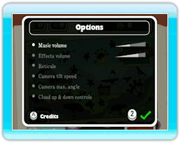

● Pantalla de selección de archivo
Antes de empezar Fluidity, se mostrará una pequeña animación y a continuación aparecerá la pantalla de selección de archivo. Si esta es la primera vez que juegas Fluidity, elige un separador de páginas vacio (el que dice New) con  para usarlo como archivo de datos y confirma tu selección con
para usarlo como archivo de datos y confirma tu selección con  . A continuación se mostrará un rápido tutorial que te ayudará a familiarizarte con el juego.
. A continuación se mostrará un rápido tutorial que te ayudará a familiarizarte con el juego.
Si continúas un juego de Fluidity, simplemente selecciona el separador de páginas que contenga el archivo de datos guardado para empezar donde te quedaste.
Una vez que hayas elegido un separador de páginas, selecciona () para confirmar, o usa para seleccionar () y así borrar el archivo de datos. Ten cuidado, una vez que borres el archivo de datos no podrás recuperarlo.

● Pantalla de selección de capítulo
Aquaticus está dividido en cuatro capítulos pero al principio solamente el capítulo primero se puede seleccionar. Los siguientes capítulos se abrirán y podrán elegirse a medida que acumules Rainbow Drops (gotas arcoíris).
Elige el capítulo que deseas jugar con y oprime para confirmar la selección.
Cada capítulo contiene además un minijuego, que podrá desbloquearse al recoger las piezas de rompecabezas () que se encuentran escondidas en las páginas de Aquaticus. Una vez que el minijuego esté disponible podrás entrar en él si oprimes  mientras el capítulo correspondiente se muestre en la pantalla. (Ver página 13)
mientras el capítulo correspondiente se muestre en la pantalla. (Ver página 13)

● Menú de opciones
Si oprimes  en la pantalla de selección de capítulo podrás acceder al menú de opciones y cambiar los ajustes. Oprime arriba o abajo en para moverte entre las opciones e izquierda o derecha para modificar la opción. Para confirmar los cambios y regresar a la pantalla de selección de capítulo oprime .
en la pantalla de selección de capítulo podrás acceder al menú de opciones y cambiar los ajustes. Oprime arriba o abajo en para moverte entre las opciones e izquierda o derecha para modificar la opción. Para confirmar los cambios y regresar a la pantalla de selección de capítulo oprime .
Oprime para ver los créditos del juego.
 |
 |
 |
 |
Como guardar
El progreso del juego se guardará automáticamente cada vez que obtengas una gota arcoíris o cuando salgas del capítulo en el menú de pausa.
Para borrar un archivo de datos simplemente elige los datos que deseas borrar, desde la pantalla de selección de archivo y selecciona . Ten cuidado una vez que borres un archivo de datos no podrás recuperarlo.
|
¡Atención!
Las siguientes acciones podrían provocar que no se guardara el progreso o que se perdieran los datos guardados. ¡No podrás recuperar los datos, así que ten cuidado!
-
Si oprimes el Botón POWER o el Botón RESET de la consola Wii o del Wii Remote mientras los datos están siendo almacenados.
-
Si se desconecta el adaptador de corriente Wii de la consola Wii mientras está encendida.
|
|
 |
 |
 |
 |